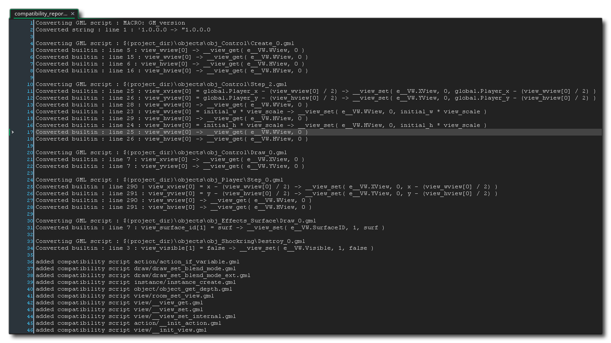

对于那些来自 GameMaker: Studio 1.4 的用户来说，一开始使用 GameMaker Studio 2 可能会有些混乱，因为对项目资源、编辑和编码的处理方式进行了许多更改。这些变化意味着 IDE 和GameMaker Language（GML）都不支持下面列出的项。然而，这并 不 意味着你不能像你所能做到的那样，将使用 GameMaker: Studio 1.4 制作的游戏导入到 GameMaker Studio 2 中！这里列出的函数将转换为 兼容脚本
在GameMaker: Studio 1.4中，你有独立的背景资源，其中你可以添加图片用作背景。在GameMaker Studio 2中所有图像都被视为精灵，并且其用途也取决于它们在房间中所被分配的层（Layers）。这也就意味着不再有“背景”资源了，并且这也意味着下述函数被弃用了：
draw_background draw_background_ext draw_background_stretched draw_background_stretched_ext draw_background_part draw_background_part_ext draw_background_general draw_background_tiled draw_background_tiled_ext background_name background_exists background_get_name draw_background draw_background_ext draw_background_stretched draw_background_stretched_ext background_get_width background_get_height background_get_transparent background_get_smooth background_get_preload background_get_uvs background_get_texture background_set_alpha_from_background background_create_from_surface background_create_color background_create_colour background_create_gradient background_add background_replace background_add_alpha background_replace_alpha background_delete background_duplicate background_assign background_save background_prefetch background_prefetch_multi background_flush background_flush_multi room_set_background
和背景一样(如上所述)，来自 GameMaker: Studio 1.4 的图块资源已经不存在了，取而代之的是 GameMaker Studio 2 中有 图块集。在 GameMaker: Studio 1.4 中，图块使用了后台资源，它们被放置在不同深度的房间编辑器中或通过代码放置，但是使用的方法并不灵活，效率也不高。为了解决这些问题，在 GameMaker Studio 2 中，图块现在是由精灵资源创建的，可以有各种不同的属性（比如动画或自动图块）。然后将它们放置在房间编辑器内的 图块层 或通过代码放置。由于这些变化，下列函数现已弃用：
tile_get_x tile_get_y tile_get_left tile_get_top tile_get_width tile_get_height tile_get_depth tile_get_visible tile_get_xscale tile_get_yscale tile_get_alpha tile_get_background tile_set_visible tile_set_background tile_set_region tile_set_position tile_set_depth tile_set_scale tile_set_blend tile_set_alpha tile_get_count tile_get_id tile_get_ids tile_get_ids_at_depth tile_add tile_exists tile_delete tile_layer_hide tile_layer_show tile_layer_delete tile_layer_shift tile_layer_find tile_layer_delete_at tile_layer_depth room_tile_add room_tile_add_ext room_tile_clear 你可以从文档的 图块集编辑器 的部分找到关于图块集 的更多信息，以及如何在房间编辑器中使用 图块层 部分。有关使用代码控制后台层的函数的更多信息，请参阅 图块层。
GameMaker: Studio 1.4 有两种不同的声音 API，一种使用了遗留的 sound_ 函数（只在 HTML5 目标平台上有效），另一种使用了 audio_ 函数音频 API 在 GameMaker Studio 2 中得到了改进和扩展，使得下面列出的遗留函数弃用了：
sound_name sound_exists sound_get_name sound_get_kind sound_get_preload sound_exists sound_restore sound_delete sound_play sound_loop sound_stop sound_stop_all sound_isplaying sound_volume sound_fade sound_global_volume
在 GameMaker: Studio 1.4 中使用 3D 模型或基元时，必须使用 d3d_ 函数。它们使用了一个过时的绘制 API，并且在许多情况下与直接使用 3D API 或甚至与使用 3D 本身无关。随着GameMaker Studio 2中顶点缓冲区、矩阵以及摄像机系统的引进，下述函数已经作废：
d3d_start d3d_end d3d_set_perspective d3d_set_hidden d3d_set_depth d3d_set_lighting d3d_set_shading d3d_set_fog d3d_set_culling d3d_set_zwriteenable d3d_set_projection d3d_set_projection_ext d3d_set_projection_ortho d3d_set_projection_perspective d3d_transform_set_identity d3d_transform_set_translation d3d_transform_set_scaling d3d_transform_set_rotation_x d3d_transform_set_rotation_y d3d_transform_set_rotation_z d3d_transform_set_rotation_axis d3d_transform_add_translation d3d_transform_add_scaling d3d_transform_add_rotation_x d3d_transform_add_rotation_y d3d_transform_add_rotation_z d3d_transform_add_rotation_axis d3d_transform_stack_clear d3d_transform_stack_empty d3d_transform_stack_push d3d_transform_stack_pop d3d_transform_stack_top d3d_transform_stack_discard d3d_transform_vertex d3d_light_define_ambient d3d_light_define_direction d3d_light_define_point d3d_light_enable d3d_primitive_begin d3d_primitive_begin_texture d3d_primitive_end d3d_vertex d3d_vertex_color d3d_vertex_colour d3d_vertex_texture d3d_vertex_texture_color d3d_vertex_texture_colour d3d_vertex_normal d3d_vertex_normal_color d3d_vertex_normal_colour d3d_vertex_normal_texture d3d_vertex_normal_texture_color d3d_vertex_normal_texture_colour d3d_draw_block d3d_draw_cylinder d3d_draw_cone d3d_draw_ellipsoid d3d_draw_wall d3d_draw_floor d3d_model_create d3d_model_destroy d3d_model_clear d3d_model_load d3d_model_save d3d_model_draw d3d_model_primitive_begin d3d_model_primitive_end d3d_model_vertex d3d_model_vertex_color d3d_model_vertex_colour d3d_model_vertex_texture d3d_model_vertex_texture_color d3d_model_vertex_texture_colour d3d_model_vertex_normal d3d_model_vertex_normal_color d3d_model_vertex_normal_colour d3d_model_vertex_normal_texture d3d_model_vertex_normal_texture_color d3d_model_vertex_normal_texture_colour d3d_model_block d3d_model_cylinder d3d_model_cone d3d_model_ellipsoid d3d_model_wall d3d_model_floor
随着 GameMaker Studio 2 中的 camera 函数的出现，这意味着不再需要很多 视图 变量，特别是那些引用到房间中的视图而不是 view_port（仍在使用）的变量。在 GameMaker: Studio 1.4 的遗留版本中，也有一些用于控制显示方式的函数，但这些函数也不再适用。这些变量和函数如下：
view_object view_angle view_xview view_yview view_hview view_wview view_hborder view_vborder view_hspeed view_vspeed display_set_windows_vertex_buffer_method display_get_windows_vertex_buffer_method display_set_windows_alternate_sync display_get_windows_alternate_sync 你可以从文档的 相机和显示 部分找到更多关于相机的信息。
GameMaker Studio 2 将许多内置功能从以前的版本转移到扩展中，这意味着以下第三方支持功能被认为已经弃用了：
ads_enable ads_disable ads_move ads_get_display_width ads_get_display_height ads_interstitial_available ads_interstitial_display ads_setup ads_engagement_available ads_engagement_launch ads_engagement_active ads_event ads_event_preload ads_set_reward_callback playhaven_add_notification_badge playhaven_hide_notification_badge playhaven_position_notification_badge playhaven_update_notification_badge pocketchange_display_reward pocketchange_display_shop analytics_event analytics_event_ext iap_event_queue iap_files_purchased iap_is_downloaded iap_product_files iap_product_status iap_store_status immersion_play_effect immersion_stop 你可以从 市场页面 上获得关于广告和分析的官方 YoYo Games 扩展。
无论是GameMaker: Studio 1.4还是GameMaker Studio 2都有一个可视化撰写拖拽按钮 (DnD™)界面来供你创作，然而however the way it is handled in GameMaker Studio 2 is quite different to the previous methods used. 以前，所有 DnD™ 操作有自己的相应的函数“幕后”工作得到预期的结果，但这不是很透明，函数调用中增加的额外开销会导致性能降低。在 GameMaker Studio 2 中，这一点已经被改变了，现在所有的动作都被编译成纯代码（如果需要的话可以这样显示），这意味着下面的动作函数已经弃用了
action_path_old action_set_sprite action_draw_font action_draw_font_old action_fill_color action_fill_colour action_line_color action_line_colour action_highscore action_set_relative action_move action_set_motion action_set_hspeed action_set_vspeed action_set_gravity action_set_friction action_move_point action_move_to action_move_start action_move_random action_snap action_wrap action_reverse_xdir action_reverse_ydir action_move_contact action_bounce action_path action_path_end action_path_position action_path_speed action_linear_step action_potential_step action_kill_object action_create_object action_create_object_motion action_create_object_random action_change_object action_kill_position action_sprite_set action_sprite_transform action_sprite_color action_sprite_colour action_sound action_end_sound action_if_sound action_another_room action_current_room action_previous_room action_next_room action_if_previous_room action_if_next_room action_set_alarm action_sleep action_set_timeline action_timeline_set action_timeline_start action_timeline_stop action_timeline_pause action_set_timeline_position action_set_timeline_speed action_message action_show_info action_show_video action_end_game action_restart_game action_save_game action_load_game action_replace_sprite action_replace_sound action_replace_background action_if_empty action_if_collision action_if action_if_number action_if_object action_if_question action_if_dice action_if_mouse action_if_aligned action_execute_script action_inherited action_if_variable action_draw_variable action_set_score action_if_score action_draw_score action_highscore_show action_highscore_clear action_set_life action_if_life action_draw_life action_draw_life_images action_set_health action_if_health action_draw_health action_set_caption action_partsyst_create action_partsyst_destroy action_partsyst_clear action_parttype_create_old action_parttype_create action_parttype_color action_parttype_colour action_parttype_life action_parttype_speed action_parttype_gravity action_parttype_secondary action_partemit_create action_partemit_destroy action_partemit_burst action_partemit_stream action_cd_play action_cd_stop action_cd_pause action_cd_resume action_cd_present action_cd_playing action_set_cursor action_webpage action_splash_web action_draw_sprite action_draw_background action_draw_text action_draw_text_transformed action_draw_rectangle action_draw_gradient_hor action_draw_gradient_vert action_draw_ellipse action_draw_ellipse_gradient action_draw_line action_draw_arrow action_color action_colour action_font action_fullscreen action_snapshot action_effect 你可以找到更多关于新 DnD™ 的 拖拽概述 部分。
兼容性脚本
当你导入一个用以前版本的 GameMaker Studio 制作的项目时，任何已经使用的弃用函数 仍然可以工作，因为 IDE 会自动将它们转换为 兼容性脚本。接下来，GameMaker Studio 2 将解析你的项目中所有使用过的弃用函数和变量，然后使用这些函数名创建一系列脚本。这些脚本将包含新的等效函数或执行与废弃函数相同操作的简短代码脚本。
每当你第一次导入一个GameMaker Studio 2项目，就会有一个大致像这样的兼容性报告出现在你的面前： 
报告的主体展现了哪些物体和脚本及其哪个位置受到了影响，而在报告的记为你会看到一系列被创建到你项目中的脚本。你可点击鼠标中键You can click the middle mouse button  or press
or press  on any of the scripts listed in the report to open it and see what has been done. 请注意，如果你看到任何脚本名字以双下划线开头（例如：__global_object_depths），那是 IDE 创建的为了兼容性 的脚本而不是从弃用函数转换而来的脚本，因此，它们 不 应该被篡改，因为它们需要其他兼容脚本来工作。
on any of the scripts listed in the report to open it and see what has been done. 请注意，如果你看到任何脚本名字以双下划线开头（例如：__global_object_depths），那是 IDE 创建的为了兼容性 的脚本而不是从弃用函数转换而来的脚本，因此，它们 不 应该被篡改，因为它们需要其他兼容脚本来工作。
当你完成了兼容性报告的修改后，你可以关闭工作区，但是如果你需要修改报告中的任何内容，你可以通过访问资源树的 便签 部分再次找到它。
请注意，有些函数已经引入到 GameMaker 语言中，以确保与旧项目的兼容性，这些函数将出现在这些兼容脚本中。然而这些函数不应该被用于你自己的项目中。你可以在如下章节中找到这些函数的列表：